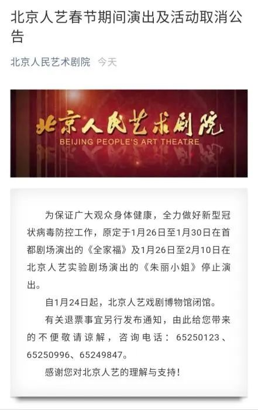
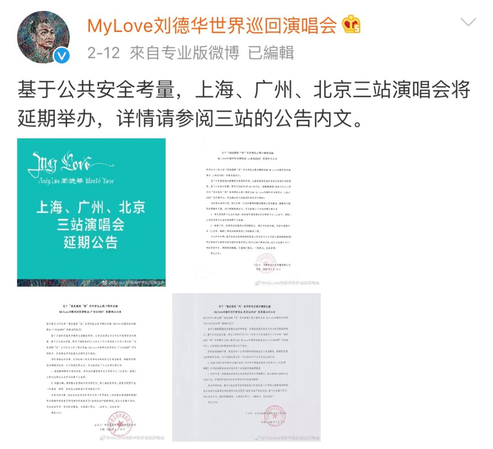

留守空剧院，我依旧等待《狮子王》到来
原文链接 备份链接 段心玫/华中科技大学新闻与信息传播学院 儿童眼科诊所的店长文子（化名）还记得，2019年的10月，自己曾在武汉琴台大剧院听了一场李云迪的音乐会，她很想念那段多姿多彩的时光（☞此前报道）。如今，大剧院与整个武汉一起，陷入 …

受疫情影响，近期国内的各类演出再次迎来一波取消、延迟高峰。据中国演出行业协会不完全统计，3月份，全国20余省市，近8000场次演出被取消或延期，3月份直接票房损失超过10亿元。刘德华演唱会、李宗盛演唱会、话剧《傲慢与偏见》《断金》等热门演出相继取消或延迟。有业内人士认为，今年的文化演出行业或将进入寒冬。

3月份演出行业继续暂停
疫情暴发后，“取消、延迟、退票”成了很多演出机构的常用词汇。1月22日，武汉率先宣布暂停或取消多场文旅活动，武汉的多场演唱会和赛事也确定延期或取消。
1月23日，文化和旅游部、国家文物局下发通知，指导各地公共文化服务机构从严控制群众文化活动数量和规模，严格执行活动报批或备案制度，严格审核近期在境内外举办的文化和旅游交流活动项目，对已审批的项目进行复核。
随后各地演出机构纷纷响应，北京保利剧院、北京人艺、天桥剧院、北京音乐厅、梅兰芳大剧院、长安大剧院等陆续宣布演出暂停或取消。

演出行业迎来一场“大考”，2月份的各类线下演出大多未能与观众见面。据中国演出行业协会数据，据不完全统计，2020年一季度各地演出取消或延期场次约2万场，占一季度总场次的80%以上，造成直接票房损失约24亿元，估算其他损失近百亿。
进入3月份，取消、延期又迎来一波高峰。2月中上旬，上海大剧院陆续取消3月份的所有演出及公共文化活动，包括音乐会、舞剧、戏剧等。上海话剧艺术中心取消《我爱桃花》《原野》《无人生还》等多场3月份演出。2月23日，国家大剧院发布公告，取消3月1日至31日期间的演出及相关活动，暂停参观。

北京音乐厅、上海东方艺术中心、上海交响乐团音乐厅确定取消或延期3月份的所有音乐会，孟京辉戏剧工作室、开心麻花等也取消全国多个城市的戏剧演出。
演出各环节受影响 刘德华取消15场演唱会
“对于演出机构来说，这次疫情的影响是非常‘惨重’的。因为文化演出行业并不是人们生活必需的一部分，而且演出的限制太多了，在之前能正常演出的时候，就需要天时、地利、人和，才能有一场完美的演出呈现。”北京某文化公司的相关负责人对中新网表示，今年的文化演出行业或将进入寒冬。
去年他们刚推出一部新戏，本来要于今年上半年在保利剧院演出，参演的重量级演员也多，几场演出门票一开售就全部秒空。如果确定取消或延迟，演出场地、演员档期、后续演出等都要重新协调。
“保利的演出场地非常抢手，能在黄金档期拿到半个月场地非常不容易。演员能够凑在一起参加演出，也是我们经过将近半年时间的协调才确定下来。还有未开售的六场演出，原本计划年后开票，目前已暂且搁置了。”该负责人表示。
在今年上半年调整的演出中，延期待定的占相当一部分，李宗盛、韩红、陈奕迅、蔡依林、林俊杰、梁静茹、陈伟霆、吴青峰等多位明星的演唱会都在待定中。部分确定延期时间的则都在今年下半年甚至2021年，到时很有可能迎来演出“撞车”现象。
张国立、王刚、张铁林主演的话剧《断金》，本来要在3月演出，现在已延期到8月底。立陶宛国家话剧院演出的话剧《致命罗基斯》巡演计划已延期至2021年。
有的演出则没那么幸运，由于档期、场地、费用等诸多问题不可延期，最后只能选择取消。比如Pixies、THE NOVEMBERS、佐藤康夫、《法语音乐剧集锦音乐会》中国站巡演等海外艺人来华演出都陆续宣布取消。
今年，刘德华本来要在北京、上海、广州、武汉、香港等地举办巡回演唱会，受疫情影响，北京、上海、广州的9场已宣布延期举行。4月份的武汉演唱会宣布取消，而由于场地等原因，香港的场次也宣布取消。刘德华演唱会总共取消15场，延期9场，有媒体估算，其损失可达上亿元人民币。

演出行业复工难 线上演出受热捧
“今年上半年看到演唱会的可能性不大。”有网友预测。目前，除3月份演出外，4月和5月的演出也陆续被取消或延迟。广州大剧院、上海大剧院已取消或延迟4月所有演出及公共文化活动。近日，加拿大女歌手艾薇儿·拉维尼还宣布，原定于4月和5月的亚洲巡演将全部取消，其中包括深圳、上海、佛山、南京等场次。
相比其他行业，演出行业的防控和复工难度也较大。3月3日，上海市发布《上海市演出场馆新型冠状病毒肺炎疫情防控的工作指南》，其中对恢复演出前的准备工作和恢复后的防疫措施都做了规定，比如实行实名制入场、每场演出错排错位出票、上座率控制在50%以内、取消演前演后互动活动等。

有演出机构人士认为，当前这种情况也就意味着没有演出公司可以真正复工，对于演出公司来说不能达到百分百销售，利润也微乎其微。此外，观众的心理也需要建设，病例全部清零后，大家还愿不愿意扎堆去看一场演出，这些都未可知。
面临这场“大考”，大家给出的答卷也各不相同。只靠线下的传统演出模式遇到挑战，云演出、云音乐会等受到热捧。国家大剧院推出“线上大剧院”，每天推送各类演出视频。中山公园音乐堂推出“线上听音乐会”，分享多位名家的演出视频。保利剧院推出“保利云剧院”，推出戏剧、音乐会、大师课、文艺战疫四大板块。

此外，摩登天空推出的“宅草莓”云音乐节也一时引发新潮流。近日日本音乐大师坂本龙一的云音乐会，在线观看人数达到300多万。
“宅草莓”云音乐节海报
虽然不是所有的演出都能用云服务代替，不过对于演出方来说，线上线下两条腿走路，探索更多的盈利模式，进行多元化发展，或许也是当下以及未来降低风险的重要途径。
来源：中国新闻网 作者：袁秀月


推荐阅读

点击大图 | 武汉楼市自救

点击大图 | 疫情之下：苹果供应链危情时刻？

原文链接 备份链接 段心玫/华中科技大学新闻与信息传播学院 儿童眼科诊所的店长文子（化名）还记得，2019年的10月，自己曾在武汉琴台大剧院听了一场李云迪的音乐会，她很想念那段多姿多彩的时光（☞此前报道）。如今，大剧院与整个武汉一起，陷入 …
原文链接 备份链接 来源：财联社 作者：史正丞 “ 据媒体报道，国际奥委会对于历届主办城市的投资大约在10亿美元上下，为此向保险公司投保约8亿美元保额，按照2-3%的保费来计算，IOC为东京奥运支付的保险费用最多不超过2400万美元。 ” …
原文链接 备份链接 图片来源：Vatican Media “ 教皇在年轻时曾因肺结核切除了一边肺的一小部分，目前除了腿部疼痛需定期治疗外，总体身体状况良好。 ” 继前一天因“身体不适”取消了一场弥撒后，83岁的罗马天主教皇方济各在周五取消 …
原文链接 备份链接 考试是青少年们进步的阶梯。考研复试、托福、雅思、专升本，现在都面临延期或取消，这背后是数以百万计的考生们，在攀登的阶梯上忽然踏空。漫长的备考，近在眼前的终点猛然消失，这些上进的考生们该如何调整人生目标，在这段特殊的空白 …
原文链接 备份链接 疫情不仅严重影响了企业复工，多家A股公司年报披露也因此延期。作为此次疫情重灾区，湖北省内上市公司年报披露所受影响正逐步显现 文 |《财经》记者 张建锋 王颖 编辑 | 陆玲 突然袭来的新型冠状病毒，不仅严重影响了企业复 …